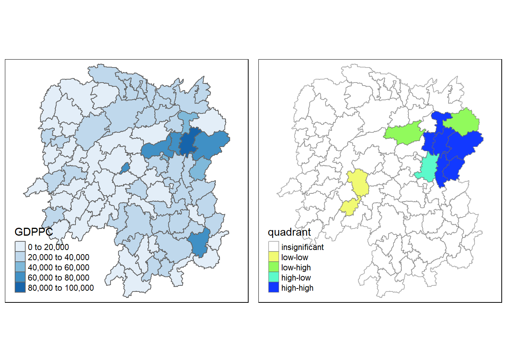
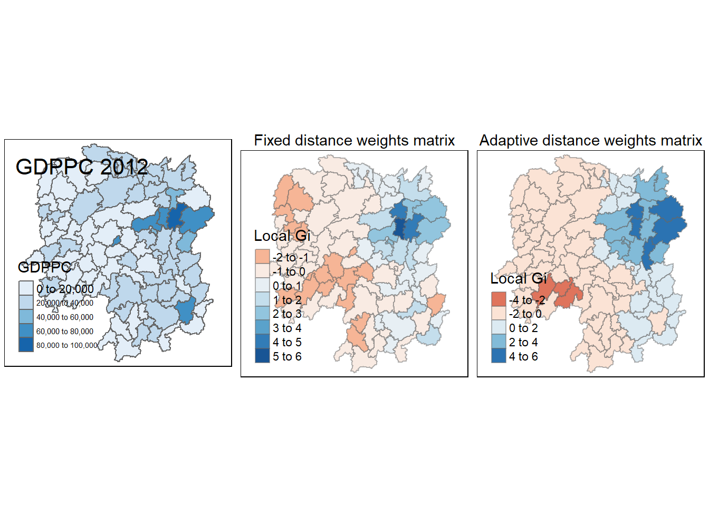

pacman::p_load(spData, tidyverse, sf, spdep, tmap)Hands-on Exercise 2
Overview
This is my second hands-on exercise for geospatial analytics! I will apply what I learnt on global and local indicators of spatial association from my second geospatial lecture on the Hunan dataset from my earlier in-class exercise.
Data
Unzip Hands-on_Ex1, copy the data folder to C:/zhuyiting1/ISSS624/Hands-on_Ex2. It should be in the same folder as Hands-on_Ex2.qmd.
Importing Shapefile Data
In addition to tidyverse (which includes dplyr) and sf packages that we used earlier, we will need the spdep package for this exercise. We do it by including it in the p_load() function. As it requires the spData package, we will install and load it as well. Finally, we need the tmap package for quick plots.
Now we want to import the Hunan shapefile into R.
hunan <- st_read(dsn = "data/geospatial",
layer = "Hunan")Reading layer `Hunan' from data source
`C:\zhuyiting1\ISSS624\Hands-on_Ex2\data\geospatial' using driver `ESRI Shapefile'
Simple feature collection with 88 features and 7 fields
Geometry type: POLYGON
Dimension: XY
Bounding box: xmin: 108.7831 ymin: 24.6342 xmax: 114.2544 ymax: 30.12812
Geodetic CRS: WGS 84We can see that the data is in geodetic CRS wgs84.
Importing Attribute Data in CSV
Aspatial Hunan Data
The code chunk below imports the aspatial Hunan 2012 data.
hunan2012 <- read_csv("data/aspatial/Hunan_2012.csv")Joining Hunan Data
The code chunk below joins the spatial and aspatial data for Hunan using the left_join() function of the dplyr package.
hunan <- left_join(hunan, hunan2012)R recognises the variable County to be the only common variable between the two dataframes and performs the join accordingly. As the two dataframes have the exact same number of observations with matching county, left_join() here works the same as a inner_join(), right_join() and full_join(). It appends the hunan2012 data to the right of the original hunan data. Notably, the geometry column from the original hunan dataframe remains at the rightmost column of the new hunan dataframe.
Visualising Regional Development Indicator
With some data about the Hunan province, we want to create a quick thematic map to visualise the distribution of Gross Domestic Product Per Capita (GDPPC) in 2012, using the qtm() function from the tmap package.
equal <- tm_shape(hunan) +
tm_fill("GDPPC",
n = 5,
style = "equal") +
tm_borders(alpha = 0.5) +
tm_layout(main.title = "Equal interval classification",
main.title.size = 1,
main.title.position = "center",
legend.height = 0.3,
legend.width = 0.7)
quantile <- tmap::tm_shape(hunan) +
tm_fill("GDPPC",
n = 5,
style = "quantile") +
tm_borders(alpha = 0.5) +
tm_layout(main.title = "Equal quantile classification",
main.title.size = 1,
main.title.position = "center",
legend.height = 0.3,
legend.width = 0.7)
tmap_arrange(equal, quantile, asp = 1, ncol = 2)
We see that the equal interval classification map shows that most regions (~60%) have GDPPC of only 1/5 of the wealthiest region. In addition, we observe that the wealth is mostly concentrated in the Northeast region of the Hunan province.
Global Spatial Autocorrelation
We want to know whether such a distribution of GDPPC is by pure chance (randomness), and if not, whether there is a positive/negative correlation between neighbouring regions or outliers. To do this, we will compute the global spatial autocorrelation statistics and perform spatial complete randomness test for global spatial autocorrelation.
Contiguity Spatial Weights
Before we can compute the global spatial autocorrelation statistics, we need to construct a spatial weights of the study area. The spatial weights are used to define the neighbouring relationships between the geographical units (i.e. counties) in the study area.
In the code chunk below, poly2nb() of the spdep package is used to compute contiguity weight matrices for the study area. This function builds a neighbours list based on regions with contiguous boundaries. The default option uses the Queen’s Case to define each county’s neighbours (queen=TRUE), which is what we will use here.
wm_q <- poly2nb(hunan)
summary(wm_q)Neighbour list object:
Number of regions: 88
Number of nonzero links: 448
Percentage nonzero weights: 5.785124
Average number of links: 5.090909
Link number distribution:
1 2 3 4 5 6 7 8 9 11
2 2 12 16 24 14 11 4 2 1
2 least connected regions:
30 65 with 1 link
1 most connected region:
85 with 11 linksThere are 448 pairs of neighbours found by the Queen’s case logic (i.e. all sides and corners that are touching each other, in other words at least 1 shared boundary point is needed for “neighbour” definition), from the 88 counties in Hunan. From the summary report, the link number distributions shows the frequency of the number of links or neighbours that each county has, the most being 11 neighbours for 1 county (region 85). On the other extreme, the 2 least connected regions (30 and 65) only have 1 neighbour each.
By calling the County column of the hunan dataframe, we can see that the county with the most neighbours is Taoyuan and that with the least neighbours are Xinhuang and Linxiang. This is consistent with the basemap that we plotted previously, where Taoyuan is a large county in the North surrounded by multiple smaller counties, and Xinhuang and Linxiang being counties along the West and Northeast borders of Hunan respectively.
hunan$County[c(85, 30, 65)][1] "Taoyuan" "Xinhuang" "Linxiang"basemap <- tm_shape(hunan) +
tm_polygons() +
tm_text("County", size = 0.5)
basemap
Row-standardised Weights Matrix
Based on the neighbour relationship determined by Queen’s Case above, we will assign spatial weights to each pairs of counties in the form of a weights matrix. Each row and each column represent 1 of the 88 counties, forming a 88 x 88 matrix. The numbers 1 and 0 are used to indicate between each row and column pair (e.g. region 1-2 represented by the value in the first row and second column), whether they are neighbours (1) or not (0). The values along the diagonal (from top left to bottom right) is always 0 as they represent the same region (e.g. 1-1, 2-2, etc.) Such a matrix is symmetrical along the same diagonal.
As each region has different number of neighbours, in practice, row-standardised weights are used instead of spatial weights. Row-standardisation is done by dividing the values in each row by the sum of that row, so that the weight is a relative fraction based on the total number of neighbours that the region has (proportion by row sum). Row-standardisation weights matrix ensures that the spatial parameter in many spatial stochastic processes are comparable between models. It is applicable where polygon features are defined by administrative boundaries. While this is the most intuitive way of summarising the neighbours’ values, this approach has a limitation in that polygons along the edges of the study area will base their lagged values on fewer polygons, thus potentially over- or under-estimating the true nature of the spatial correlation in the data. More robust options such as the binary coding could be explored.
The code chunk below performs row standardisation for spatial weights using the nb2listw() function from the spdep package, with input being an object of class nb. The default style is “W” which is row standardisation. Other styles include “B” for basic binary coding, “C” for globally standaridsation, “U” for C divided by the number of neighbours, and “S” for variance-stablising coding scheme. For the zero.policy, we will set it to TRUE to permit the weights list to be formed with zero-length weights vector, which means that weights vector of zero length are inserted for regions without neighbour in the neighbours list. Nevertheless, from the poly2nb() function above, we know that all regions have at least 1 neighbour.
rswm_q <- nb2listw(wm_q,
zero.policy = TRUE)
rswm_qCharacteristics of weights list object:
Neighbour list object:
Number of regions: 88
Number of nonzero links: 448
Percentage nonzero weights: 5.785124
Average number of links: 5.090909
Weights style: W
Weights constants summary:
n nn S0 S1 S2
W 88 7744 88 37.86334 365.9147Global Spatial Autocorrelation: Moran’s I
Next, we will perform Moran’s I statistical testing using moran.test() of spdep.
Moran’s I Statistical Testing
The code chunk below performs Moran’s I statistical testing. Using an upper-tailed test, the null and alternative hypotheses are as follows:
H0: The observed spatial patterns of GDPPC in Hunan in 2012 are not clustered (i.e. either random or dispersed).
H1: The observed spatial patterns of GDPPC in Hunan in 2012 are clustered.
moran.test(hunan$GDPPC,
listw = rswm_q,
zero.policy = TRUE,
na.action = na.omit)
Moran I test under randomisation
data: hunan$GDPPC
weights: rswm_q
Moran I statistic standard deviate = 4.7351, p-value = 1.095e-06
alternative hypothesis: greater
sample estimates:
Moran I statistic Expectation Variance
0.300749970 -0.011494253 0.004348351 With a p-value of < 0.05, at 5% significant level and 95% confidence level, we reject H0. Hence, there is sufficient evidence to support that the observed spatial patterns of GDPPC in Hunan in 2012 are clustered. In fact, a positive Moran’s I statistic of 0.301 supports that there is positive clustering in the GDPPC in Hunan in 2012 (i.e. counties with higher GDPPC tend to be geographically clustered/neighbours).
Monte Carlo Moran’s I
When we doubt that the assumptions of Moran’s I (i.e. normality and randomisation) are true, we can use a Monte Carlo simulation under the assumption of no spatial pattern and assigning all regions the mean value. We then compare the actual Moran’s I to that of the randomly simulated distribution to obtain the p-value (pseudo significance).
The code chunk below performs permutation test for Moran’s I statistics by using moran.mc() of spdep. A total of 1000 simulations will be performed with the seed number 1234.
set.seed(1234)
bperm = moran.mc(hunan$GDPPC,
listw = rswm_q,
nsim = 999,
zero.policy = TRUE,
alternative = "greater",
na.action = na.omit)
bperm
Monte-Carlo simulation of Moran I
data: hunan$GDPPC
weights: rswm_q
number of simulations + 1: 1000
statistic = 0.30075, observed rank = 1000, p-value = 0.001
alternative hypothesis: greaterUsing an upper-tailed test, we see that p-value = 0.001 is still < 0.05. We similarly reject H0 and conclude that at 5% significance level, there is sufficient evidence to support that the spatial distribution of GDPPC is positively clustered in Hunan in 2012.
Visualising Monte Carlo Moran’s I
In the code chunk below, we will visualise the simulated Moran’s I test statistics by plotting the distribution of the statistical values as a histogram using hist() and abline() of R Graphics.
mean(bperm$res[1:1000])[1] -0.01472993var(bperm$res[1:1000])[1] 0.004466925summary(bperm$res[1:1000]) Min. 1st Qu. Median Mean 3rd Qu. Max.
-0.18339 -0.06167 -0.02113 -0.01473 0.02617 0.30075 hist(bperm$res,
freq = TRUE,
breaks = 20,
xlab = "Simulated Moran's I")
abline(v = 0,
col = "red")
From the distribution, we see that the simulated Moran’s I values are right-skewed, with a median below the 0 reference line. The Moran’s I of 0.301 falls on the narrow right-tail of the distribution, corroborating with our earlier result of it being statistically significant.
The above can similarly be done using ggplot2.
df <- data.frame(bperm$res)
ggplot(df,
aes(x = bperm$res)) +
geom_histogram(binwidth = 0.02,
boundary = 0,
color = "black",
fill = "grey") +
geom_vline(xintercept = 0,
color = "red") +
labs(title = "Histogram of simulated Moran's I",
x = "Simulated Moran's I",
y = "Frequency") +
theme_bw() +
theme(panel.grid.major = element_blank(),
panel.grid.minor = element_blank(),
plot.title = element_text(hjust = 0.5))Global Spatial Autocorrelation: Geary’s C
In this section, we will perform Geary’s C statistical testing by using the geary.test() function of spdep. The same null and alternative hypotheses apply.
H0: The observed spatial patterns of GDPPC in Hunan in 2012 are not clustered (i.e. either random or dispersed).
H1: The observed spatial patterns of GDPPC in Hunan in 2012 are clustered.
geary.test(hunan$GDPPC, listw = rswm_q)
Geary C test under randomisation
data: hunan$GDPPC
weights: rswm_q
Geary C statistic standard deviate = 3.6108, p-value = 0.0001526
alternative hypothesis: Expectation greater than statistic
sample estimates:
Geary C statistic Expectation Variance
0.6907223 1.0000000 0.0073364 With a p-value of < 0.05, at 5% significant level and 95% confidence level, we reject H0. Hence, there is sufficient evidence to support that the observed spatial patterns of GDPPC in Hunan in 2012 are clustered. In fact, a positive Geary’s C statistic of 0.691 < 1 (small c) supports that there is positive clustering in the GDPPC in Hunan in 2012 (i.e. counties with higher GDPPC tend to be geographically clustered/neighbours).
Monte Carlo Geary’s C
The code chunk below performs permutation test for Geary’s C statistic using geary.mc() of spdep. We similarly set seed number of 1234 for the simulation for reproducible results.
set.seed(1234)
bperm = geary.mc(hunan$GDPPC,
listw = rswm_q,
nsim = 999)
bperm
Monte-Carlo simulation of Geary C
data: hunan$GDPPC
weights: rswm_q
number of simulations + 1: 1000
statistic = 0.69072, observed rank = 1, p-value = 0.001
alternative hypothesis: greaterThe Monte Carlo simulation returned similar result of a significant p-value (0.001) at 5% significance level. Hence, we reject H0 and conclude that there is sufficient evidence to support that the spatial distribution of GDPPC in Hunan in 2012 is clustered.
Visualising Monte Carlo Geary’s C
Like we did for Moran’s I, we will plot a histogram to reveal the distribution of the simulated values of Geary’s C by using the following code chunks.
mean(bperm$res[1:1000])[1] 1.004089var(bperm$res[1:1000])[1] 0.007527444summary(bperm$res[1:1000]) Min. 1st Qu. Median Mean 3rd Qu. Max.
0.6907 0.9501 1.0050 1.0041 1.0594 1.2722 hist(bperm$res,
freq = TRUE,
breaks = 20,
xlab = "Simulated Geary's C")
abline(v = 1,
col = "red")
Unlike Moran’s I, the cutoff/value indicating randomness is 1 instead of 0, as indicated by the vertical red line in the histogram above. The Geary’s C value of 0.691 is very close to the extreme left of the distribution, supporting the statistically significant result that we saw using the statistical testing.
Spatial Correlogram
Spatial correlograms are used to examine patterns of spatial autocorrelation. They show how correlated are pairs of spatial observations when you increase the distance (lag) between them - they are plots of some index of autocorrelation (Moran’s I or Geary’s c) against distance. Row standardisation is not needed.
Moran’s I Correlogram
In the code chunk below, sp.correlogram() of spdep is used to compute a 1- to 6-lag spatial correlogram of GDPPC. The global spatial autocorrelation used is Moran’s I. The plot() of R’s base Graph is used to plot the output.
MI_corr <- sp.correlogram(wm_q,
hunan$GDPPC,
order = 6,
method = "I",
style = "W")
plot(MI_corr)
From the plot, Moran’s I is positive for up to 4 lags, beyond which Moran’s I drops below 0. It is also noted that lag of 7 or more will return empty neighbour sets, in which case we set zero.policy = TRUE in the code chunk below and try to plot up to 10 lags.
MI_corr_10 <- sp.correlogram(wm_q,
hunan$GDPPC,
order = 10,
method = "I",
style = "W",
zero.policy = TRUE)
plot(MI_corr_10)Comparing with the earlier plot, we see that the standard deviation for Moran’s I decreases from 1 to 6 lags, but increases thereafter with the introduction of zero-length weights vectors. Moran’s I also returns to a positive level from 9 lags, albeit with very large standard deviations.
In addition to this, it is necessary to examine the full statistical report as not all autocorrelation values are statistically significant. This is done using the print() function in the code chunk below.
print(MI_corr)Spatial correlogram for hunan$GDPPC
method: Moran's I
estimate expectation variance standard deviate Pr(I) two sided
1 (88) 0.3007500 -0.0114943 0.0043484 4.7351 2.189e-06 ***
2 (88) 0.2060084 -0.0114943 0.0020962 4.7505 2.029e-06 ***
3 (88) 0.0668273 -0.0114943 0.0014602 2.0496 0.040400 *
4 (88) 0.0299470 -0.0114943 0.0011717 1.2107 0.226015
5 (88) -0.1530471 -0.0114943 0.0012440 -4.0134 5.984e-05 ***
6 (88) -0.1187070 -0.0114943 0.0016791 -2.6164 0.008886 **
---
Signif. codes: 0 '***' 0.001 '**' 0.01 '*' 0.05 '.' 0.1 ' ' 1We observe that at 5% significance level, the autocorrelation values are statistically significant for all lags between 1 and 6, except 4-lag.
print(MI_corr_10)Spatial correlogram for hunan$GDPPC
method: Moran's I
estimate expectation variance standard deviate Pr(I) two sided
1 (88) 0.3007500 -0.0114943 0.0043484 4.7351 2.189e-06 ***
2 (88) 0.2060084 -0.0114943 0.0020962 4.7505 2.029e-06 ***
3 (88) 0.0668273 -0.0114943 0.0014602 2.0496 0.040400 *
4 (88) 0.0299470 -0.0114943 0.0011717 1.2107 0.226015
5 (88) -0.1530471 -0.0114943 0.0012440 -4.0134 5.984e-05 ***
6 (88) -0.1187070 -0.0114943 0.0016791 -2.6164 0.008886 **
7 (83) -0.1598792 -0.0121951 0.0031980 -2.6115 0.009014 **
8 (67) -0.1016594 -0.0151515 0.0051687 -1.2033 0.228869
9 (45) 0.0151929 -0.0227273 0.0101956 0.3755 0.707254
10 (19) 0.0210858 -0.0555556 0.0266889 0.4691 0.638973
---
Signif. codes: 0 '***' 0.001 '**' 0.01 '*' 0.05 '.' 0.1 ' ' 1When we include more lags by allowing zero-length weights vector, the autocorrelation is statistically significant at 5% significant level up to 7 lags.
Geary’s C Correlogram
In the code chunk below, we perform a similar analysis using the sp.correlogram() function from the spdep package, except using Geary’s C global spatial autocorrelation. We also plot the output using plot() from R’s base Graph, and print() the full report for the p-values.
GC_corr <- sp.correlogram(wm_q,
hunan$GDPPC,
order = 6,
method = "C",
style = "W")
plot(GC_corr)
print(GC_corr)Spatial correlogram for hunan$GDPPC
method: Geary's C
estimate expectation variance standard deviate Pr(I) two sided
1 (88) 0.6907223 1.0000000 0.0073364 -3.6108 0.0003052 ***
2 (88) 0.7630197 1.0000000 0.0049126 -3.3811 0.0007220 ***
3 (88) 0.9397299 1.0000000 0.0049005 -0.8610 0.3892612
4 (88) 1.0098462 1.0000000 0.0039631 0.1564 0.8757128
5 (88) 1.2008204 1.0000000 0.0035568 3.3673 0.0007592 ***
6 (88) 1.0773386 1.0000000 0.0058042 1.0151 0.3100407
---
Signif. codes: 0 '***' 0.001 '**' 0.01 '*' 0.05 '.' 0.1 ' ' 1We see that the correlogram for Geary’s C has an opposite shape (concave) compared to that for Moran’s I (convex). This is because Moran’s I has a range of -1 to 1 and defines positive clustering with >0 values, while Geary’s C only has positive values with randomness at 1 and positive clustering between 0 and 1. In other words, larger Moran’s I implies positive clustering but larger Geary’s C implies negative clustering (dispersing).
Geary’s C correlogram also shows larger standard deviations across lags when compared to Moran’s I. From the report, the autocorrelation values are statistically significant at 5% significance level for 1, 2 and 5 lags, less than that for Moran’s I.
Cluster and Outlier Analysis
Local Indicator of Spatial Association (LISA) is a subset of localised geospatial statistics methods for analysing the location-related tendency (clusters or outliers) in the attributes of geographically referenced data (points or area). The LISA for each observation gives an indication of the extent of significant spatial clustering of similar values around that observation. The sum of LISAs for all observations is proportional to a global indicator of spatial association.
We will apply local Moran’s I to detect clusters and/or outliers from the 2012 GDPPC of the Hunan province.
Local Moran’s I
The code chunk below computes the local Moran’s I using the localmoran() function of the spdep package. We will use the row standardised weights matrix here.
fips <- order(hunan$County)
localMI <- localmoran(hunan$GDPPC, rswm_q)
head(localMI) Ii E.Ii Var.Ii Z.Ii Pr(z != E(Ii))
1 -0.001468468 -2.815006e-05 4.723841e-04 -0.06626904 0.9471636
2 0.025878173 -6.061953e-04 1.016664e-02 0.26266425 0.7928094
3 -0.011987646 -5.366648e-03 1.133362e-01 -0.01966705 0.9843090
4 0.001022468 -2.404783e-07 5.105969e-06 0.45259801 0.6508382
5 0.014814881 -6.829362e-05 1.449949e-03 0.39085814 0.6959021
6 -0.038793829 -3.860263e-04 6.475559e-03 -0.47728835 0.6331568We obtain the following statistics for the first 6 output:
Ii: Local Moran statisticE.Ii: Expectation of local Moran statisticVar.Ii: Variance of local Moran statisticZ.Ii: Standard deviate of local Moran statisticPr(): p-value of local Moran statistic
The code chunk below lists the content of the local Moran matrix derived using printCoefmat() function from R’s Stats package, arranged by the County name in alphabetical order.
printCoefmat(data.frame(localMI[fips,],
row.names = hunan$County[fips],
check.names = FALSE)) Ii E.Ii Var.Ii Z.Ii Pr(z != E(Ii))
Anhua -2.2493e-02 -5.0048e-03 5.8235e-02 -0.0725 0.9422301
Anren -3.9932e-01 -7.0111e-03 7.0348e-02 -1.4791 0.1391057
Anxiang -1.4685e-03 -2.8150e-05 4.7238e-04 -0.0663 0.9471636
Baojing 3.4737e-01 -5.0089e-03 8.3636e-02 1.2185 0.2230456
Chaling 2.0559e-02 -9.6812e-04 2.7711e-02 0.1293 0.8971056
Changning -2.9868e-05 -9.0010e-09 1.5105e-07 -0.0768 0.9387606
Changsha 4.9022e+00 -2.1348e-01 2.3194e+00 3.3590 0.0007822 ***
Chengbu 7.3725e-01 -1.0534e-02 2.2132e-01 1.5895 0.1119416
Chenxi 1.4544e-01 -2.8156e-03 4.7116e-02 0.6830 0.4946117
Cili 7.3176e-02 -1.6747e-03 4.7902e-02 0.3420 0.7323546
Dao 2.1420e-01 -2.0824e-03 4.4123e-02 1.0297 0.3031703
Dongan 1.5210e-01 -6.3485e-04 1.3471e-02 1.3159 0.1881947
Dongkou 5.2918e-01 -6.4461e-03 1.0748e-01 1.6338 0.1023002
Fenghuang 1.8013e-01 -6.2832e-03 1.3257e-01 0.5120 0.6086619
Guidong -5.9160e-01 -1.3086e-02 3.7003e-01 -0.9510 0.3415864
Guiyang 1.8240e-01 -3.6908e-03 3.2610e-02 1.0305 0.3027630
Guzhang 2.8466e-01 -8.5054e-03 1.4152e-01 0.7793 0.4357997
Hanshou 2.5878e-02 -6.0620e-04 1.0167e-02 0.2627 0.7928094
Hengdong 9.9964e-03 -4.9063e-04 6.7742e-03 0.1274 0.8986110
Hengnan 2.8064e-02 -3.2160e-04 3.7597e-03 0.4629 0.6434065
Hengshan -5.8201e-03 -3.0437e-05 5.1076e-04 -0.2562 0.7978131
Hengyang 6.2997e-02 -1.3046e-03 2.1865e-02 0.4349 0.6636633
Hongjiang 1.8790e-01 -2.3019e-03 3.1725e-02 1.0678 0.2855921
Huarong -1.5389e-02 -1.8667e-03 8.1030e-02 -0.0475 0.9621124
Huayuan 8.3772e-02 -8.5569e-04 2.4495e-02 0.5407 0.5887023
Huitong 2.5997e-01 -5.2447e-03 1.1077e-01 0.7969 0.4255374
Jiahe -1.2431e-01 -3.0550e-03 5.1111e-02 -0.5363 0.5917276
Jianghua 2.8651e-01 -3.8280e-03 8.0968e-02 1.0204 0.3075618
Jiangyong 2.4337e-01 -2.7082e-03 1.1746e-01 0.7180 0.4727569
Jingzhou 1.8270e-01 -8.5106e-04 2.4363e-02 1.1759 0.2396152
Jinshi -1.1988e-02 -5.3666e-03 1.1334e-01 -0.0197 0.9843090
Jishou -2.8680e-01 -2.6305e-03 4.4028e-02 -1.3543 0.1756424
Lanshan 6.3334e-02 -9.6365e-04 2.0441e-02 0.4497 0.6529132
Leiyang 1.1581e-02 -1.4948e-04 2.5082e-03 0.2342 0.8148123
Lengshuijiang -1.7903e+00 -8.2129e-02 2.1598e+00 -1.1623 0.2451020
Li 1.0225e-03 -2.4048e-07 5.1060e-06 0.4526 0.6508382
Lianyuan -1.4672e-01 -1.8983e-03 1.9145e-02 -1.0467 0.2952490
Liling 1.3774e+00 -1.5097e-02 4.2601e-01 2.1335 0.0328837 *
Linli 1.4815e-02 -6.8294e-05 1.4499e-03 0.3909 0.6959021
Linwu -2.4621e-03 -9.0703e-06 1.9258e-04 -0.1768 0.8596957
Linxiang 6.5904e-02 -2.9028e-03 2.5470e-01 0.1363 0.8915545
Liuyang 3.3688e+00 -7.7502e-02 1.5180e+00 2.7972 0.0051555 **
Longhui 8.0801e-01 -1.1377e-02 1.5538e-01 2.0787 0.0376449 *
Longshan 7.5663e-01 -1.1100e-02 3.1449e-01 1.3690 0.1709996
Luxi 1.8177e-01 -2.4855e-03 3.4249e-02 0.9956 0.3194403
Mayang 2.1852e-01 -5.8773e-03 9.8049e-02 0.7166 0.4736044
Miluo 1.8704e+00 -1.6927e-02 2.7925e-01 3.5715 0.0003550 ***
Nan -9.5789e-03 -4.9497e-04 6.8341e-03 -0.1099 0.9125016
Ningxiang 1.5607e+00 -7.3878e-02 8.0012e-01 1.8274 0.0676458 .
Ningyuan 2.0910e-01 -7.0884e-03 8.2306e-02 0.7536 0.4511108
Pingjiang -9.8964e-01 -2.6457e-03 5.6027e-02 -4.1698 3.049e-05 ***
Qidong 1.1806e-01 -2.1207e-03 2.4747e-02 0.7640 0.4448892
Qiyang 6.1966e-02 -7.3374e-04 8.5743e-03 0.6771 0.4983276
Rucheng -3.6992e-01 -8.8999e-03 2.5272e-01 -0.7181 0.4726740
Sangzhi 2.5053e-01 -4.9470e-03 6.8000e-02 0.9797 0.3272227
Shaodong -3.2659e-02 -3.6592e-05 5.0546e-04 -1.4510 0.1467765
Shaoshan 2.1223e+00 -5.0227e-02 1.3668e+00 1.8583 0.0631298 .
Shaoyang 5.9499e-01 -1.1253e-02 1.3012e-01 1.6807 0.0928305 .
Shimen -3.8794e-02 -3.8603e-04 6.4756e-03 -0.4773 0.6331568
Shuangfeng 9.2835e-03 -2.2867e-03 3.1516e-02 0.0652 0.9480354
Shuangpai 8.0591e-02 -3.1366e-04 8.9838e-03 0.8536 0.3933400
Suining 3.7585e-01 -3.5933e-03 4.1870e-02 1.8544 0.0636875 .
Taojiang -2.5394e-01 -1.2395e-03 1.4477e-02 -2.1002 0.0357113 *
Taoyuan 1.4729e-02 -1.2039e-04 8.5103e-04 0.5090 0.6107279
Tongdao 4.6482e-01 -6.9870e-03 1.9879e-01 1.0582 0.2899569
Wangcheng 4.4220e+00 -1.1067e-01 1.3596e+00 3.8873 0.0001014 ***
Wugang 7.1003e-01 -7.8144e-03 1.0710e-01 2.1935 0.0282749 *
Xiangtan 2.4530e-01 -3.6457e-04 3.2319e-03 4.3213 1.551e-05 ***
Xiangxiang 2.6271e-01 -1.2703e-03 2.1290e-02 1.8092 0.0704213 .
Xiangyin 5.4525e-01 -4.7442e-03 7.9236e-02 1.9539 0.0507157 .
Xinhua 1.1810e-01 -6.2649e-03 8.6001e-02 0.4241 0.6715036
Xinhuang 1.5725e-01 -4.1820e-03 3.6648e-01 0.2667 0.7897221
Xinning 6.8928e-01 -9.6674e-03 2.0328e-01 1.5502 0.1210854
Xinshao 5.7578e-02 -8.5932e-03 1.1769e-01 0.1929 0.8470456
Xintian -7.4050e-03 -5.1493e-03 1.0877e-01 -0.0068 0.9945429
Xupu 3.2406e-01 -5.7468e-03 5.7735e-02 1.3726 0.1698803
Yanling -6.9021e-02 -5.9211e-04 9.9306e-03 -0.6867 0.4922880
Yizhang -2.6844e-01 -2.2463e-03 4.7588e-02 -1.2202 0.2223756
Yongshun 6.3064e-01 -1.1350e-02 1.8830e-01 1.4795 0.1390190
Yongxing 4.3411e-01 -9.0735e-03 1.5088e-01 1.1409 0.2538993
You 7.8750e-02 -7.2728e-03 1.2116e-01 0.2471 0.8048036
Yuanjiang 2.0004e-04 -1.7760e-04 2.9798e-03 0.0069 0.9944802
Yuanling 8.7298e-03 -2.2981e-06 2.3221e-05 1.8121 0.0699726 .
Yueyang 4.1189e-02 -1.9768e-04 2.3113e-03 0.8608 0.3893219
Zhijiang 1.0476e-01 -7.8123e-04 1.3100e-02 0.9221 0.3564539
Zhongfang -2.2685e-01 -2.1455e-03 3.5927e-02 -1.1855 0.2358293
Zhuzhou 3.2864e-01 -5.2432e-04 7.2391e-03 3.8688 0.0001094 ***
Zixing -7.6849e-01 -8.8210e-02 9.4057e-01 -0.7014 0.4830289
---
Signif. codes: 0 '***' 0.001 '**' 0.01 '*' 0.05 '.' 0.1 ' ' 1At 5% significance level, the p-value is significant for Changsha, Liling, Liuyang, Longhui, Miluo, Pingjiang, Taojiang, Wangcheng, Wugang, Xiangtan and Zhuzhou. We will display the results in the next section.
Mapping local Moran’s I
Before mapping the local Moran’s I, we want to append the local Moran’s I dataframe (i.e. localMI) to the hunan SpatialPolygonDataFrame. The code chunk below does this using the cbind() function from R base which combine the vectors as columns in the final matrix. We also rename the p-value (Pr.z….E.Ii) variable title to Pr.Ii for neatness.
hunan.localMI <- cbind(hunan, localMI) %>%
rename(Pr.Ii = Pr.z....E.Ii..)
hunan.localMISimple feature collection with 88 features and 40 fields
Geometry type: POLYGON
Dimension: XY
Bounding box: xmin: 108.7831 ymin: 24.6342 xmax: 114.2544 ymax: 30.12812
Geodetic CRS: WGS 84
First 10 features:
NAME_2 ID_3 NAME_3 ENGTYPE_3 Shape_Leng Shape_Area County
1 Changde 21098 Anxiang County 1.869074 0.10056190 Anxiang
2 Changde 21100 Hanshou County 2.360691 0.19978745 Hanshou
3 Changde 21101 Jinshi County City 1.425620 0.05302413 Jinshi
4 Changde 21102 Li County 3.474325 0.18908121 Li
5 Changde 21103 Linli County 2.289506 0.11450357 Linli
6 Changde 21104 Shimen County 4.171918 0.37194707 Shimen
7 Changsha 21109 Liuyang County City 4.060579 0.46016789 Liuyang
8 Changsha 21110 Ningxiang County 3.323754 0.26614198 Ningxiang
9 Changsha 21111 Wangcheng County 2.292093 0.13049161 Wangcheng
10 Chenzhou 21112 Anren County 2.240739 0.13343936 Anren
City avg_wage deposite FAI Gov_Rev Gov_Exp GDP GDPPC GIO
1 Changde 31935 5517.2 3541.0 243.64 1779.5 12482.0 23667 5108.9
2 Changde 32265 7979.0 8665.0 386.13 2062.4 15788.0 20981 13491.0
3 Changde 28692 4581.7 4777.0 373.31 1148.4 8706.9 34592 10935.0
4 Changde 32541 13487.0 16066.0 709.61 2459.5 20322.0 24473 18402.0
5 Changde 32667 564.1 7781.2 336.86 1538.7 10355.0 25554 8214.0
6 Changde 33261 8334.4 10531.0 548.33 2178.8 16293.0 27137 17795.0
7 Changsha 40446 21415.0 43599.0 2473.10 4605.5 81113.0 63118 99254.0
8 Changsha 40744 18662.0 49234.0 2448.90 4812.2 73250.0 62202 114145.0
9 Changsha 45171 12122.0 48829.0 2285.50 3802.3 37488.0 70666 148976.0
10 Chenzhou 28058 4598.9 6386.1 220.57 1454.7 4941.2 12761 4189.2
Loan NIPCR Bed Emp EmpR EmpRT Pri_Stu Sec_Stu Household
1 2806.9 7693.7 1931 336.39 270.5 205.9 19.584 17.819 148.1
2 4550.0 8269.9 2560 456.78 388.8 246.7 42.097 33.029 240.2
3 2242.0 8169.9 848 122.78 82.1 61.7 8.723 7.592 81.9
4 6748.0 8377.0 2038 513.44 426.8 227.1 38.975 33.938 268.5
5 358.0 8143.1 1440 307.36 272.2 100.8 23.286 18.943 129.1
6 6026.5 6156.0 2502 392.05 329.6 193.8 29.245 26.104 190.6
7 23408.0 15719.0 6225 919.62 721.4 300.1 90.978 58.819 374.8
8 18435.0 13763.0 4351 852.96 757.6 318.3 80.715 68.853 391.7
9 10330.0 16495.0 1678 361.48 268.6 131.2 28.838 24.815 161.3
10 2555.3 3271.8 970 290.82 255.4 99.4 33.171 17.505 104.6
Household_R NOIP Pop_R RSCG Pop_T Agri Service Disp_Inc RORP
1 135.4 53 346.0 3957.9 528.3 4524.410 14100.0 16610 0.6549309
2 208.7 95 553.2 4460.5 804.6 6545.350 17727.0 18925 0.6875466
3 43.7 77 92.4 3683.0 251.8 2562.460 7525.0 19498 0.3669579
4 256.0 96 539.7 7110.2 832.5 7562.340 53160.0 18985 0.6482883
5 157.2 99 246.6 3604.9 409.3 3583.910 7031.0 18604 0.6024921
6 184.7 122 399.2 6490.7 600.5 5266.510 6981.0 19275 0.6647794
7 369.8 733 642.7 16233.0 1285.5 10844.470 26617.8 27345 0.4999611
8 369.6 552 655.5 15623.0 1186.5 12804.480 18447.7 24020 0.5524652
9 154.8 314 266.6 5623.3 533.4 5222.356 6648.6 27690 0.4998125
10 121.9 34 243.2 2386.4 388.7 2357.764 3814.1 16072 0.6256753
ROREmp Ii E.Ii Var.Ii Z.Ii Pr.Ii
1 0.8041262 -0.001468468 -2.815006e-05 4.723841e-04 -0.06626904 0.9471636332
2 0.8511756 0.025878173 -6.061953e-04 1.016664e-02 0.26266425 0.7928093714
3 0.6686757 -0.011987646 -5.366648e-03 1.133362e-01 -0.01966705 0.9843089778
4 0.8312558 0.001022468 -2.404783e-07 5.105969e-06 0.45259801 0.6508382339
5 0.8856065 0.014814881 -6.829362e-05 1.449949e-03 0.39085814 0.6959020959
6 0.8407091 -0.038793829 -3.860263e-04 6.475559e-03 -0.47728835 0.6331568039
7 0.7844544 3.368821673 -7.750185e-02 1.518028e+00 2.79715225 0.0051555232
8 0.8882011 1.560689600 -7.387766e-02 8.001247e-01 1.82735933 0.0676457604
9 0.7430563 4.421958618 -1.106694e-01 1.359593e+00 3.88727819 0.0001013746
10 0.8782065 -0.399322576 -7.011066e-03 7.034768e-02 -1.47912938 0.1391057404
geometry
1 POLYGON ((112.0625 29.75523...
2 POLYGON ((112.2288 29.11684...
3 POLYGON ((111.8927 29.6013,...
4 POLYGON ((111.3731 29.94649...
5 POLYGON ((111.6324 29.76288...
6 POLYGON ((110.8825 30.11675...
7 POLYGON ((113.9905 28.5682,...
8 POLYGON ((112.7181 28.38299...
9 POLYGON ((112.7914 28.52688...
10 POLYGON ((113.1757 26.82734...The code chunk below plots the local Moran’s I values and their statistical significance (based on p-values) using the choropleth mapping functions from the tmap package.
localMI.map <- tm_shape(hunan.localMI) +
tm_fill(col = "Ii",
style = "pretty",
palette = "RdBu",
title = "Local Moran statistics") +
tm_borders(alpha = 0.5)
pvalue.map <- tm_shape(hunan.localMI) +
tm_fill(col = "Pr.Ii",
breaks = c(-Inf, 0.001, 0.01, 0.05, 0.1, Inf),
palette = "-Blues",
title = "Local Moran's I p-values") +
tm_borders(alpha = 0.5)
tmap_arrange(localMI.map, pvalue.map, asp = 1, ncol = 2)On the left, we note regions of positive (blue) and negative (orange) Moran’s I statistics, indicative of positive and negative clustering relationships. On the right, we see that the p-values are significant at 5% significance level for the regions in darker shades of blue. They generally correspond to regions with high positive local Moran’s I statistics. The negative clustering region (high region surrounded by low neighbours) is not statistically significant as it only has 3 neighbours by contiguity weights matrix.
Creating a LISA Cluster Map
The LISA Cluster Map shows the significant locations colour-coded by type of spatial autocorrelation. The first step is to plot the Moran scatterplot.
Plotting Moran Scatterplot
The Moran scatterplot is an illustration of the relationship between the values of the chosen attributes at each location and the average value of the same attribute at neighbouring locations.
The code chunk below plots the Moran scatterplot of GDPPC 2012 by using moran.plot() of spdep.
nci <- moran.plot(hunan$GDPPC,
rswm_q,
labels = as.character(hunan$County),
xlab = "GDPPC 2012",
ylab = "Spatially lagged GDPPC 2012")The Moran scatterplot can be interpreted by the 4 quadrants:
Top-right (high-high): Positive autocorrelation, i.e. clusters (the region and its neighbours all have high values)
Bottom-left (low-low): Positive autocorrelation, i.e. clusters (the region and its neighbours all have low values)
Top-left (low-high): Negative autocorrelation, i.e. outlier (low outlier among high neighbours)
Bottom-right (high-low): Negative autocorrelation, i.e. outlier (high outlier among low neighbours)
We see that most regions follow a cluster autocorrelation pattern rather than outlier pattern.
Plotting Moran Scatterplot with Standardised Variables
First, we use scale() from base R to centre and scale the variables. Here, centering is done by subtracting the mean (omitting NAs) from the corresponding columns, and scaling is done by dividing the (centred) variables by their standard deviations. The as.vector() from the pbdDMAT package added at the end of the code chunk below is to ensure that the data type for hunan$Z.GDPPC is a non-distributed vector instead of a distributed matrix. This is so that we can then append it to our dataframe later.
hunan$Z.GDPPC <- scale(hunan$GDPPC) %>% as.vectorPlotting the Moran scatterplot again using the code chunk below, this time as nci2.
nci2 <- moran.plot(hunan$Z.GDPPC,
rswm_q,
labels = as.character(hunan$County),
xlab = "z-GDPPC 2012",
ylab = "Spatially lagged z-GDPPC 2012")We see that the x- and y-axes are scaled to 0 (for the division of the 4 quadrants).
Preparing LISA Map Classes
The code chunks below show the steps to prepare a LISA cluster map.
quadrant <- vector(mode = "numeric",
length = nrow(localMI))Next, we centre the variable of interest around its mean.
DV <- hunan$GDPPC - mean(hunan$GDPPC)This is followed by centering the local Moran’s I around its mean. This is for consistency with the DV method, and it is sufficient to simply use the local Moran’s I value without centering it around the mean (i.e. the code chunk below works the same as C_mI <- localMI[, 1]).
C_mI <- localMI[, 1] - mean(localMI[, 1])Then, we set a statistical significance level for local Moran’s at 5%.
signif <- 0.05The next 4 command lines define the high-high, low-low, low-high and high-low quadrants.
quadrant[DV < 0 & C_mI > 0] <- 1 # C_mi > 0 -> cluster // DV refers to GDPPC wrt mean -> -ve means low-low
quadrant[DV < 0 & C_mI < 0] <- 2 # C_mi < 0 -> outlier
quadrant[DV > 0 & C_mI < 0] <- 3 # C_mi < 0 -> outlier
quadrant[DV > 0 & C_mI > 0] <- 4 # C_mi > 0 -> clusterFinally, we place the non-significant Moran’s value in category 0.
quadrant[localMI[,5] > signif] <- 0In fact, we can combine all the steps into a single code chunk below.
quadrant <- vector(mode = "numeric",
length = nrow(localMI))
DV <- hunan$GDPPC - mean(hunan$GDPPC)
C_mI <- localMI[, 1] - mean(localMI[, 1])
signif <- 0.05
quadrant[DV < 0 & C_mI > 0] <- 1
quadrant[DV < 0 & C_mI < 0] <- 2
quadrant[DV > 0 & C_mI < 0] <- 3
quadrant[DV > 0 & C_mI > 0] <- 4
quadrant[localMI[,5] > signif] <- 0Plotting LISA Map
Finally, we can build the LISA map using the code chunk below.
gdppc <- qtm(hunan, "GDPPC", fill.palette = "Blues")
hunan.localMI$quadrant <- quadrant
colors <- c("#ffffff", # white for non-significant Moran's values
"#f1fa73", # yellow for low-low
"#91fa5c", # green for low-high
"#5cfacb", # cyan for high-low
"#1239ff") # blue for high-high
clusters <- c("insignificant", "low-low", "low-high", "high-low", "high-high")
LISAmap <- tm_shape(hunan.localMI) +
tm_fill(col = "quadrant",
style = "cat",
palette = colors[c(sort(unique(quadrant)))+1],
labels = clusters[c(sort(unique(quadrant)))+1],
popup.vars = c("")) +
tm_view(set.zoom.limits = c(11,17)) +
tm_borders(alpha=0.5)
tmap_arrange(gdppc, LISAmap, asp=1, ncol=2)
The plot on the right shows that the statistically significant Moran’s I values are in blue for high-high autocorrelation and yellow for low-low autocorrelation (clusters). These regions are all found on the East side of the Hunan province, and they generally correspond to the higher GDPPC regions (see plot on the left). It also shows 3 outlier regions in green and cyan.
Hot Spot and Cold Spot Area Analysis
Besides detecting clusters and outliers, localised spatial statistics can also be used to detect hot and/or cold spot areas.
The term ‘hot spot’ has been used generically across disciplines to describe a region or value that is higher relative to its surroundings.
Getis and Ord’s G-Statistics
An alternative spatial statistics to detect spatial anomalies is the Getis and Ord’s G-statistics. It looks at neighbours within a defined proximity to identify where either high or low values clutser spatially. Here, statistically significant hot-spots are recognised as areas of high values where other areas within a neighbourhood range also share high values too.
The analysis consists of three steps:
Deriving spatial weight matrix
Computing Gi statistics
Mapping Gi statistics
Deriving Distance-based Weights Matrix
First, we need to define a new set of neighbours based on distance for Getis-Ord, instead of shared borders used for spatial autocorrelation.
There are two types of distance-based proximit matrix, namely:
Fixed distance weights matrix; and
Adaptive distance weights matrix.
Deriving the Centroid
Distance-based weights matrix requires the centroids of the polygons to be determined.
To do this, we need the coordinates in a separate dataframe using a mapping function. The mapping function applies a given function to each element of a vector and returns a vector of the same length. Our input vector will be the geometry column of the sf object hunan. The function used is st_centroid() from sf package. We will use map_dbl() variation of map() from the purrr package.
To get our longitude values we map the st_centroid() function over the geometry column of hunan and access the longitude value through double bracket notation [[ ]] and value 1. This allows us to get only the longitude, which is the first value in each centroid.
longitude <- map_dbl(hunan$geometry, ~st_centroid(.x)[[1]])We do the same for latitude with one key difference. We access the second value per each centroid with [[2]] for latitude.
latitude <- map_dbl(hunan$geometry, ~st_centroid(.x)[[2]])Now that we have latitude and longitude, we use cbind() to put longitude and latitude into the same object.
coords <- cbind(longitude, latitude)
coords longitude latitude
[1,] 112.1531 29.44362
[2,] 112.0372 28.86489
[3,] 111.8917 29.47107
[4,] 111.7031 29.74499
[5,] 111.6138 29.49258
[6,] 111.0341 29.79863
[7,] 113.7065 28.23215
[8,] 112.3460 28.13081
[9,] 112.8169 28.28918
[10,] 113.3534 26.57906
[11,] 113.8942 25.98122
[12,] 112.4006 25.63215
[13,] 112.5542 25.33880
[14,] 113.6636 25.54967
[15,] 112.9206 25.26722
[16,] 113.1883 26.21248
[17,] 113.4521 25.93480
[18,] 112.4209 26.36132
[19,] 113.0152 27.08120
[20,] 112.6350 26.75969
[21,] 112.7087 27.27930
[22,] 112.9095 26.42079
[23,] 111.9522 26.80117
[24,] 110.2606 27.89384
[25,] 110.0921 27.54115
[26,] 109.7985 26.91321
[27,] 109.5765 26.54507
[28,] 109.7211 27.78801
[29,] 109.7339 26.21157
[30,] 109.1537 27.22941
[31,] 110.6442 27.83407
[32,] 110.5916 28.57282
[33,] 109.5984 27.39828
[34,] 111.4783 27.67997
[35,] 112.1745 27.46256
[36,] 111.2315 27.86930
[37,] 110.3149 26.32113
[38,] 111.3248 26.48991
[39,] 110.5859 27.10164
[40,] 110.9593 27.34884
[41,] 111.8296 27.18765
[42,] 110.1926 26.70972
[43,] 110.7334 26.78494
[44,] 110.9123 26.54354
[45,] 111.4599 27.42910
[46,] 112.5268 27.92456
[47,] 112.3406 27.77407
[48,] 109.5602 28.66808
[49,] 109.5071 28.01142
[50,] 109.9954 28.60033
[51,] 109.4273 28.42749
[52,] 109.7587 28.31518
[53,] 109.5044 29.21940
[54,] 109.9899 28.16053
[55,] 109.9664 29.01206
[56,] 111.3785 28.28449
[57,] 112.4350 29.23817
[58,] 112.5558 28.97135
[59,] 111.7379 24.97087
[60,] 112.1831 25.31559
[61,] 111.9743 25.65101
[62,] 111.7009 25.91101
[63,] 112.2196 25.88615
[64,] 112.6472 29.48614
[65,] 113.5102 29.49285
[66,] 113.1172 28.79707
[67,] 113.7089 28.76024
[68,] 112.7963 28.71653
[69,] 110.9276 29.39439
[70,] 113.6420 26.80361
[71,] 113.4577 27.66123
[72,] 113.8404 26.37989
[73,] 113.4758 27.17064
[74,] 113.1428 27.62875
[75,] 110.3017 29.39053
[76,] 113.1957 29.25343
[77,] 111.7410 26.36035
[78,] 112.1831 28.49854
[79,] 111.3390 27.01465
[80,] 111.8208 27.75124
[81,] 110.0753 27.23539
[82,] 112.3965 27.08323
[83,] 112.7683 25.82828
[84,] 113.1679 28.30074
[85,] 111.4495 28.95406
[86,] 112.7956 27.68910
[87,] 111.5896 25.49530
[88,] 111.2393 25.19355coords now has 2 columns to indicate the longitude and latitude for the centroid of each region.
Determining Cut-off Distance
We want to determine the upper limit for distance band using the following steps:
- Return a matrix with indices of points belonging to the set of k nearest neighbours of each other by using knearneigh() of spdep.
- Convert the knn object returned by knearneigh() into a neighbours list of class nb with a list of integer vectors containing neighbour region number ids using knn2nb() of spdep.
- Return the length of neighbour relationship edges by using nbdists() of spdep. The function returns in the units of the coordinates if the coordinates are projected, and in km otherwise. As the Hunan data was in geodesic CRS, the unit will be in km.
- Remove the list structure of the returned object by using unlist() of base R.
k1 <- knn2nb(knearneigh(coords, k = 1))
k1dists <- unlist(nbdists(k1, coords, longlat = TRUE))
summary(k1dists) Min. 1st Qu. Median Mean 3rd Qu. Max.
24.79 32.57 38.01 39.07 44.52 61.79 The summary report shows that the largest first nearest neighbour distance is 61.79km. We will use this as the upper threshold to ensure that all units will have at least 1 neighbour.
Computing Fixed Distance Weights Matrix
Now, we will compute the distance weights matrix by using dnearneigh() of spdep.
wm_d62 <- dnearneigh(coords, 0, 62, longlat = TRUE)
wm_d62Neighbour list object:
Number of regions: 88
Number of nonzero links: 324
Percentage nonzero weights: 4.183884
Average number of links: 3.681818 324 links were made between the 88 regions.
Next, nb2listw() of spdep is used to convert the nb object into spatial weights object. A binary style is used to indicate whether a pair of region is neighbours (1) or not (0).
wm62_lw <- nb2listw(wm_d62, style = "B")
summary(wm62_lw)Characteristics of weights list object:
Neighbour list object:
Number of regions: 88
Number of nonzero links: 324
Percentage nonzero weights: 4.183884
Average number of links: 3.681818
Link number distribution:
1 2 3 4 5 6
6 15 14 26 20 7
6 least connected regions:
6 15 30 32 56 65 with 1 link
7 most connected regions:
21 28 35 45 50 52 82 with 6 links
Weights style: B
Weights constants summary:
n nn S0 S1 S2
B 88 7744 324 648 5440Here, we see that 6 regions only have 1 neighbour each, while the maximum number of neighbours defined by 62km distance between centroids is 6, compared to the earlier definition by Queen’s Case of 11.
Computing Adaptive Distance Weights Matrix
One of the characteristics of fixed distance weights matrix is that more densely settled areas (usually the urban areas) tend to have more neighbours than the less densely settled areas (usually the rural areas). Having many neighbours smoothes the neighbour relationship across more neighbours.
It is possible to control the number of neighbours directly using k-nearest neighbours, either accepting asymmetric neighbours or imposing symmetry. In this case, we will set all regions to have 8 neighbours each (k = 8). Such an adaptive weighting scheme will use shorter distances or bandwidths where data are dense and longer where data are sparse.
knn <- knn2nb(knearneigh(coords, k = 8))
knnNeighbour list object:
Number of regions: 88
Number of nonzero links: 704
Percentage nonzero weights: 9.090909
Average number of links: 8
Non-symmetric neighbours listSimilarly, nb2listw() of spdep is used to convert the nb object into spatial weights object in binary style.
knn_lw <- nb2listw(knn, style = "B")
summary(knn_lw)Characteristics of weights list object:
Neighbour list object:
Number of regions: 88
Number of nonzero links: 704
Percentage nonzero weights: 9.090909
Average number of links: 8
Non-symmetric neighbours list
Link number distribution:
8
88
88 least connected regions:
1 2 3 4 5 6 7 8 9 10 11 12 13 14 15 16 17 18 19 20 21 22 23 24 25 26 27 28 29 30 31 32 33 34 35 36 37 38 39 40 41 42 43 44 45 46 47 48 49 50 51 52 53 54 55 56 57 58 59 60 61 62 63 64 65 66 67 68 69 70 71 72 73 74 75 76 77 78 79 80 81 82 83 84 85 86 87 88 with 8 links
88 most connected regions:
1 2 3 4 5 6 7 8 9 10 11 12 13 14 15 16 17 18 19 20 21 22 23 24 25 26 27 28 29 30 31 32 33 34 35 36 37 38 39 40 41 42 43 44 45 46 47 48 49 50 51 52 53 54 55 56 57 58 59 60 61 62 63 64 65 66 67 68 69 70 71 72 73 74 75 76 77 78 79 80 81 82 83 84 85 86 87 88 with 8 links
Weights style: B
Weights constants summary:
n nn S0 S1 S2
B 88 7744 704 1300 23014Computing Gi Statistics
Gi Statistics Using Fixed Distance
The code chunk below calculates the Gi statistics of the 88 regions using the fixed distance weights matrix.
fips <- order(hunan$County)
gi.fixed <- localG(hunan$GDPPC, wm62_lw)
gi.fixed [1] 0.436075843 -0.265505650 -0.073033665 0.413017033 0.273070579
[6] -0.377510776 2.863898821 2.794350420 5.216125401 0.228236603
[11] 0.951035346 -0.536334231 0.176761556 1.195564020 -0.033020610
[16] 1.378081093 -0.585756761 -0.419680565 0.258805141 0.012056111
[21] -0.145716531 -0.027158687 -0.318615290 -0.748946051 -0.961700582
[26] -0.796851342 -1.033949773 -0.460979158 -0.885240161 -0.266671512
[31] -0.886168613 -0.855476971 -0.922143185 -1.162328599 0.735582222
[36] -0.003358489 -0.967459309 -1.259299080 -1.452256513 -1.540671121
[41] -1.395011407 -1.681505286 -1.314110709 -0.767944457 -0.192889342
[46] 2.720804542 1.809191360 -1.218469473 -0.511984469 -0.834546363
[51] -0.908179070 -1.541081516 -1.192199867 -1.075080164 -1.631075961
[56] -0.743472246 0.418842387 0.832943753 -0.710289083 -0.449718820
[61] -0.493238743 -1.083386776 0.042979051 0.008596093 0.136337469
[66] 2.203411744 2.690329952 4.453703219 -0.340842743 -0.129318589
[71] 0.737806634 -1.246912658 0.666667559 1.088613505 -0.985792573
[76] 1.233609606 -0.487196415 1.626174042 -1.060416797 0.425361422
[81] -0.837897118 -0.314565243 0.371456331 4.424392623 -0.109566928
[86] 1.364597995 -1.029658605 -0.718000620
attr(,"cluster")
[1] Low Low High High High High High High High Low Low High Low Low Low
[16] High High High High Low High High Low Low High Low Low Low Low Low
[31] Low Low Low High Low Low Low Low Low Low High Low Low Low Low
[46] High High Low Low Low Low High Low Low Low Low Low High Low Low
[61] Low Low Low High High High Low High Low Low High Low High High Low
[76] High Low Low Low Low Low Low High High Low High Low Low
Levels: Low High
attr(,"gstari")
[1] FALSE
attr(,"call")
localG(x = hunan$GDPPC, listw = wm62_lw)
attr(,"class")
[1] "localG"The output of localG() is a vector of G or Gstar values, with attributes “gstari” set to TRUE or FALSE, “call” set to the function call, and class “localG”.
The Gi statistics is represented as a Z-score. Greater values represent a greater intensity of clustering and the direction (positive or negative) indicates high or low clusters.
Next, we will join the Gi values to their corresponding hunan sf dataframe by using the code chunk below.
hunan.gi <- cbind(hunan, as.matrix(gi.fixed)) %>%
rename(gstat_fixed = as.matrix.gi.fixed.)The code chunk above performs three tasks. First, it convert the output vector (i.e. gi.fixed) into r matrix object by using as.matrix(). Next, cbind() is used to join hunan and gi.fixed matrix to produce a new SpatialPolygonDataFrame called hunan.gi. Lastly, the field name of the gi values is renamed to gstat_fixed by using rename().
Gi Statistics Using AdaptiveDistance
The code chunk below are used to compute the Gi values for GDPPC2012 by using an adaptive distance weight matrix (i.e knn_lw).
fips <- order(hunan$County)
gi.adaptive <- localG(hunan$GDPPC, knn_lw)
hunan.gi <- cbind(hunan.gi, as.matrix(gi.adaptive)) %>%
rename(gstat_adaptive = as.matrix.gi.adaptive.)Mapping Gi Values with Fixed and Adaptive Distance Weights
The code chunk below shows the functions used to map the Gi values derived using fixed and adaptive distance weights matrix.
gdppc <- qtm(hunan, "GDPPC", fill.palette = "Blues", title = "GDPPC 2012")
Gimap.fixed <- tm_shape(hunan.gi) +
tm_fill(col = "gstat_fixed",
style = "pretty",
palette = "RdBu",
title = "Local Gi") +
tm_borders(alpha = 0.5) +
tm_layout(main.title = "Fixed distance weights matrix",
main.title.size = 0.9,
main.title.position = "center")
Gimap.adaptive <- tm_shape(hunan.gi) +
tm_fill(col = "gstat_adaptive",
style = "pretty",
palette = "RdBu",
title = "Local Gi") +
tm_borders(alpha = 0.5) +
tm_layout(main.title = "Adaptive distance weights matrix",
main.title.size = 0.9,
main.title.position = "center")
tmap_arrange(gdppc,
Gimap.fixed,
Gimap.adaptive,
asp = 1,
ncol = 3)
Overall, fixed distance method works well for point data. It is often a good option for polygon data when there is large variation in polygon size, and a consistent scale of analysis is desired. Adaptive distance or k-nearest neighbours method, on the other hand, is effective when we want to ensure a minimum number of neighbours in the analysis. This is especially when the values associated with the features are skewed (i.e. not normally distributed), and as a rule of thumb we want to evaluate each feature within the context of at least 8 neighbours.
We saw earlier from the histogram of the simulated Moran’s I values that there is a slight right-skew. Here, we observe that the fixed distance method show positive clusters around in the high GDPPC 2012 regions, and negative clusters generally in the West part of Hunan. The adaptive distance method shows a wider area for strong positive clusters in the same high GDPPC 2012 regions, and a more negative cluster in the Southwest region.